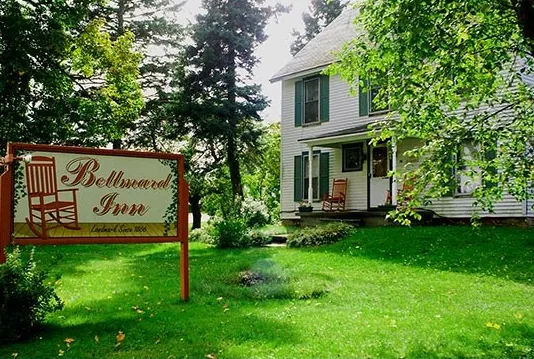
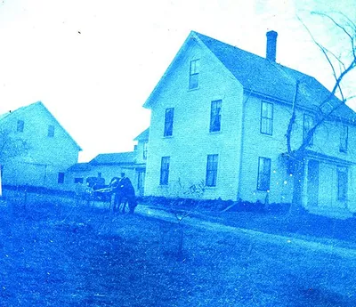
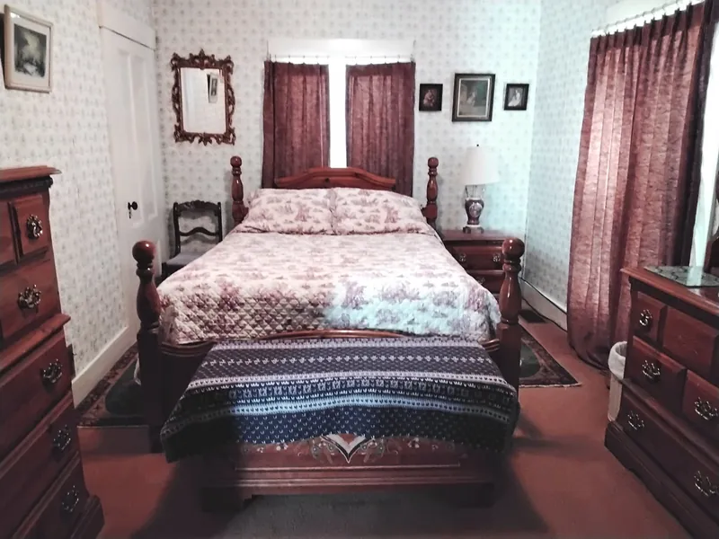

A country inn on Main Street, Princeton. Built in 1866, taking guests since 1951.
Seven bedrooms, a dining room with a fireplace, and breakfast made to order with homemade bread. Open April 1 through October 31.
Reservations need 24 hours’ notice. Pets welcome at no charge.


Who has kept the house
Eight entries, from the deeds at the courthouse and a book a Belmore son published in 1945. The same house, rebuilt once, on the same street.
Daniel Brockway, a carpenter, builds the original buildings himself.
Daniel Belmore buys the property, a year after marrying Flora Pike. Their children: Albert, Bruce, Georgia and Jennie.
Flora Belmore opens Mrs. Belmore’s Fancy Millinery and becomes Princeton’s first business woman. Her shop is now Flora’s Room.
On January 8 a fire levels the Belmore buildings. The house is rebuilt that same year.
Flora deeds the property to her son, Albert Belmore.
Ola and Peter Mardavich buy it on April 4 and open it for lodging. Guests come up from New York City to rest.
Willis and Letha Butler raise a family here and serve breakfast and an evening meal by reservation.
The present innkeepers buy the Bellmard from Willis on December 7, after years running Long Lake Camps here in Princeton.

Seven rooms, each with a name
Four on the first floor with private baths, three upstairs that share a bath in the hall: good for families and friends travelling together. The inn sleeps up to 18.
- Flora’s Room $70–$80
- Seagull Room $60–$70
- Chickadee Room $65–$75
- Partridge Room $65–$75
- River Room $60–$70
- Brook Room $60–$70
- Lake Room $65–$75
Nightly, one or two guests. Maine lodging tax applies.
Rooms, rates and policiesBreakfast and dinner, by request
Meals are separate from the room, need 24 hours’ notice and a minimum of two guests, May through September. Dietary needs? The menu gets adjusted.
Breakfast 7–9 a.m. · $15
Made to order: juice, coffee or tea, eggs, bacon or sausage, hot or cold cereal, muffins, French toast on Sandra’s and Doug’s homemade bread, and pancakes with Bellmard blueberries.
Dinner 6–7 p.m. · $40
One entree served family style, from roast turkey to chicken, pork roast, fish or pasta, with homemade biscuits, vegetables, and Sandra’s pies and desserts.
Small groups
The inn caters special meals for small groups.
Lakes all around Princeton
Princeton’s public landing puts a boat into Lewey Lake, the Grand Falls Flowage and the St. Croix River. Smallmouth bass are the main fishery; Grand Lake Stream is known for landlocked salmon.
Fishing, paddling, hunting and day trips- Big Lake17,000 acres
- West Grand Lake14,000 acres
- Meddybemps Lake6,700 acres
- Grand Falls Flowage6,600 acres
- Pocomoonshine Lake2,400 acres
- Crawford Lake1,600 acres
Reserve by phone or email
Give the inn 24 hours’ notice. Check-in is 1 to 9 p.m., check-out at 10.
207-796-2261 86 Main Street, Princeton, Maine 04668Next to the Baptist Church, on Route 1.
- Wi-Fi and TV
- Pets welcome at no charge, with a reservation
- Off-street parking, covered parking for bicycles and motorcycles
- The Bellmard Cottage Museum, on site
- No smoking inside the inn